Experience
Professional roles, internships and organizational leadership across mechatronics engineering and industrial operations.
Work Experience
Roles at PT Aldzama, delivering engineering and site work for PT Freeport Indonesia and partner companies.
Project Supervisor & Refractory Production Lead
PT Aldzama, Kiln Demolition (PT Hensheng New Energy) / Launder Cover Refractory (PTFI)
- Spearheaded on-site supervision of kiln demolition workflows with a verified zero-LTI safety record.
- Enforced K3/HSE compliance protocols in full conformance with Kemenaker RI regulations.
- Led the on-site fabrication team for launder cover refractory systems at PT Freeport Indonesia, auditing material usage and quality control.


Project Engineer & Furnace Control Engineer
PT Aldzama, PTFI Copper Chip Milling System / Furnace & Burner Control
- Engineered the full tender documentation package, securing contract award for the Copper Chip Milling System project.
- Commissioned Omron PLC-based furnace control programs for LPG burner systems.
- Authored K3/HSE documentation to PTFI safety standards: JSA, HIRADC, Permit-to-Work, Emergency Response Plans.
- Specified the process solution around 2× Sigma X6132 horizontal milling machines (7.5 kW, 30–1,500 RPM) and a Ø31 mm HSS M42 Cobalt end mill, sized to meet PTFI's 90 ton/year, ≥95% dimensional-spec KPI for copper chip production.
- Verified the proposed process through an actual machining trial — chips measured 7 × 1 × 1 mm, within PTFI's 15 × 5 × 1 mm dimensional limit — before the proposal was submitted.
- Drafted the plant general layout (5 working zones, one-way material flow), major equipment/consumables/spare-part lists, and the 24-month S-curve production and preparation schedule.
- Authored the Work Method Statement for the Copper Chip Workshop electrical installation: cable tray, four SDP panels, panel wiring, cable pulling and devices, with inspection hold points and RFIs for drawing conflicts. See the WMS summary.


Furnace control panel at PT Aldzama
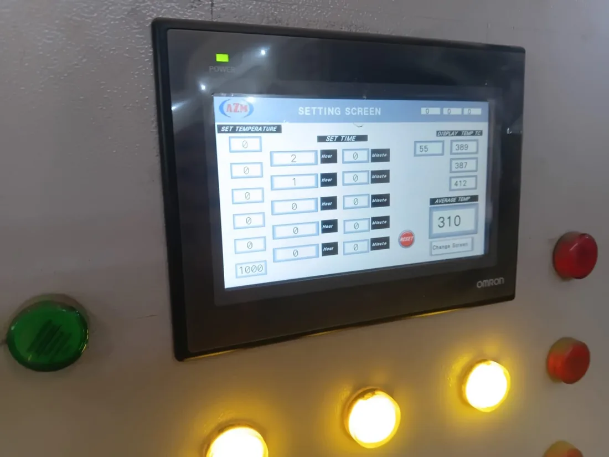
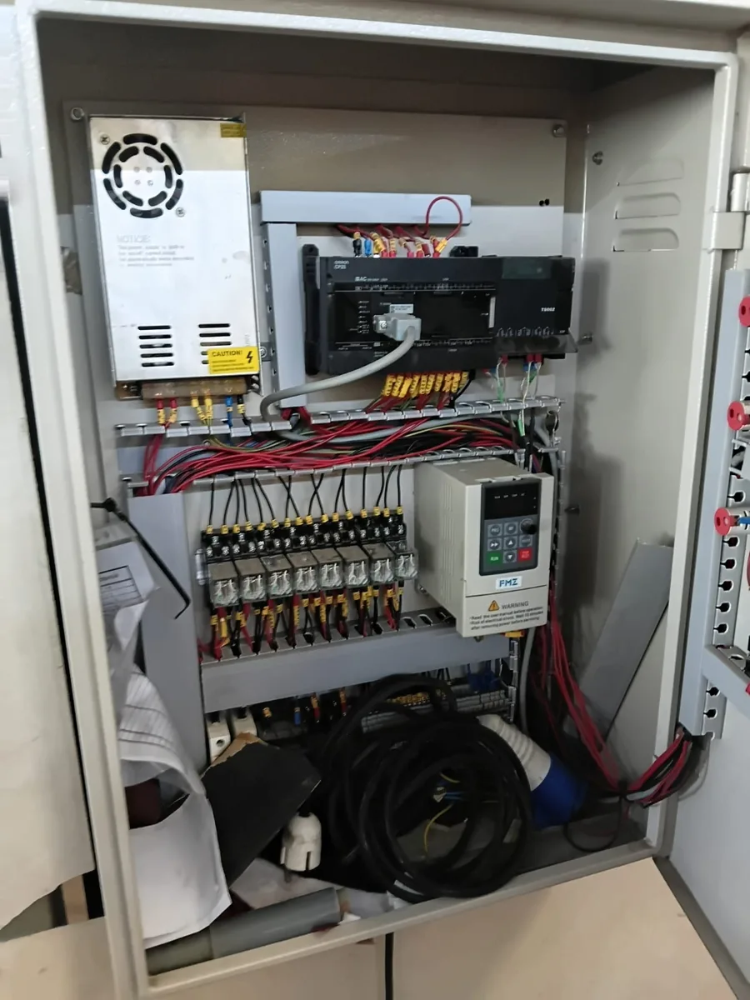
Junior Engineer, Instrumentation and Robotics
PT Aldzama, Gresik, East Java
Awarded the Best Idea Prize (Kaizen Improvement Category) and Most Active Prize (Improvement Category) for contributions to process optimization and workplace innovation.


Site photos
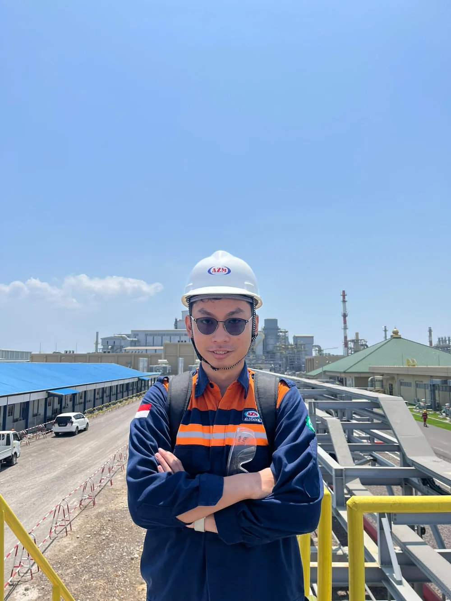
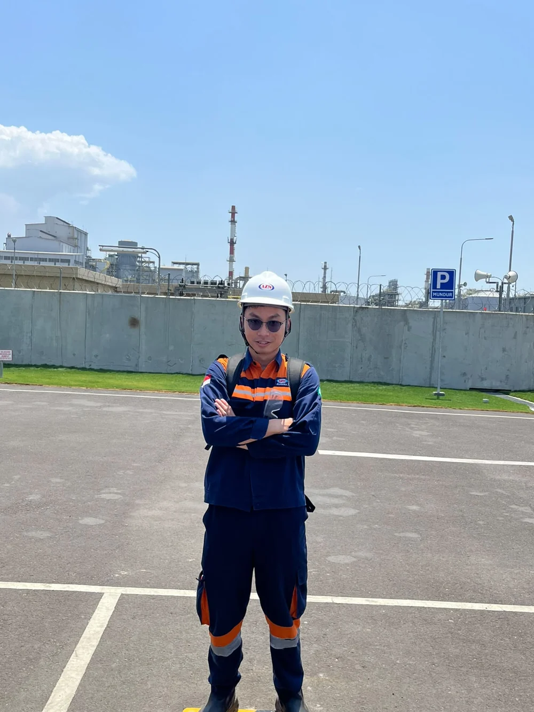
Mechanical Drafter / R&D Electrical Engineer
PT Aldzama, Gresik, East Java
- Drafted 2D technical specifications and assembly drawings using AutoCAD and SolidWorks.
- Assembled prototype control panels integrating contactors, relay logic modules, inverters and PLC I/O wiring to IEC/PUIL standards.


College Experience
Thesis research, internships and laboratory practicum from the D4 Mechatronics Engineering Technology programme.
Final Year Thesis Researcher — Underwater Sonar Detection System
Politeknik Manufaktur Bandung, Bandung, West Java
- Designed and fabricated a static six-transducer DYP-L04 piezoelectric sonar array in a sealed, O-ring-gasketed ABS housing, achieving 175° of sectoral horizontal coverage without any moving/scanning parts.
- Engineered the full signal chain: Arduino Uno UART firmware for round-robin sensor polling, plus a battery/boost-converter power stage (4×18650 Li-ion → 24 V) sized for ~6.6 hours of runtime.
- Built a Python-based real-time radar GUI with live 2D visualization, SAFE/WARNING/DANGER status thresholds, and serial connection management.
- Validated the prototype through pond field-testing — angular coverage, turbidity-deviation, and live object-detection trials — achieving 0.03–0.05 cm reading precision and object detection to 300 cm.
- Successfully defended the thesis (04 August 2025) and graduated with a cumulative GPA of 3.28/4.00, predicate "Sangat Memuaskan."


Maintenance Engineer Intern, Instrumentation & Control Systems
PT Petrokimia Gresik, Gresik, East Java
- Overhauled bagging system maintenance procedures, restoring units to operational specification.
- Gained hands-on exposure to Siemens S7-300 modular PLC systems and I/O diagnostics.
- Recognized by the Maintenance Division Head for training quality and leadership in the intern induction program.
- Followed plant monitoring walkthroughs on the DIGIFERT screens and attended an Azbil private seminar on industrial control.

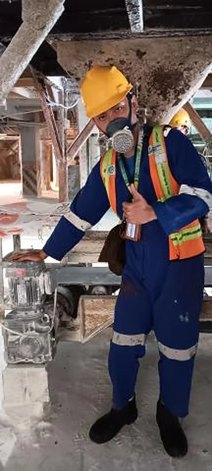
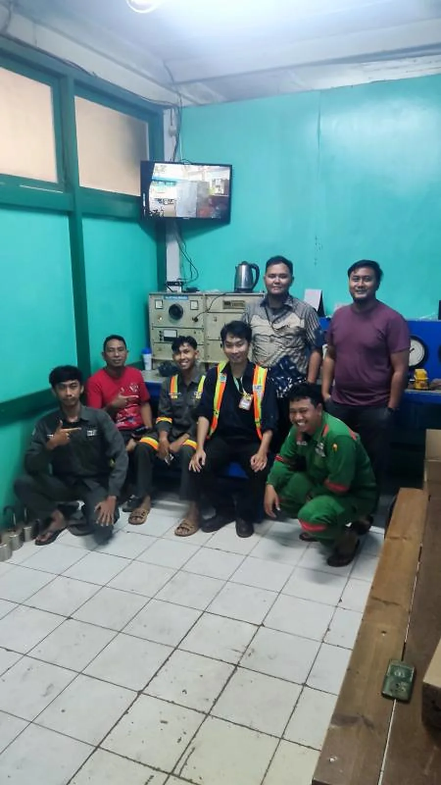
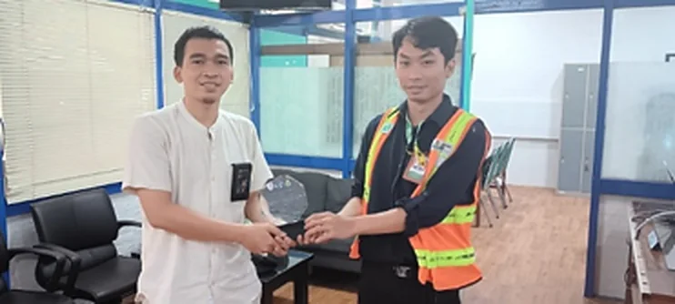
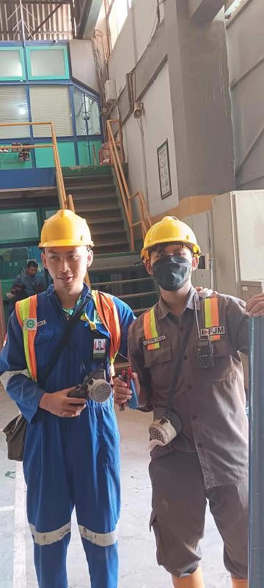
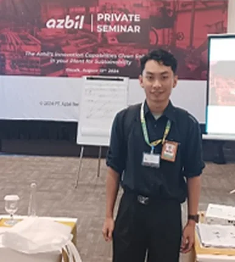
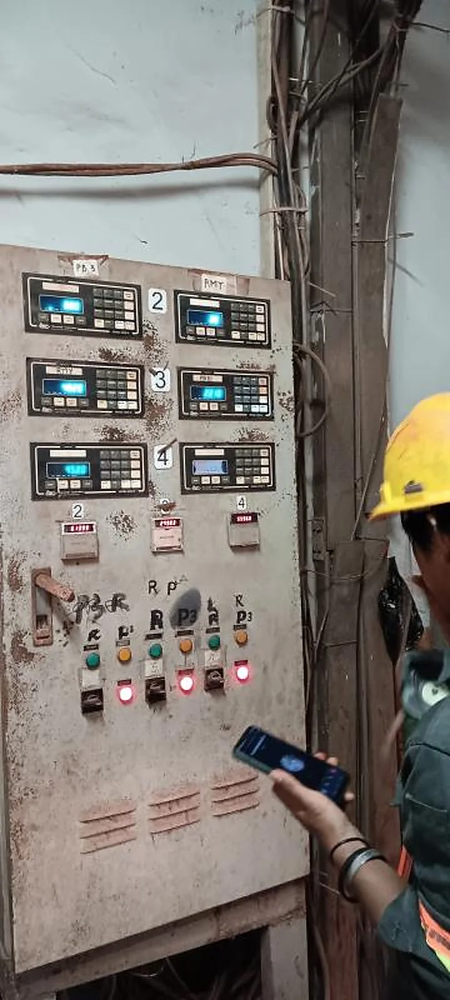
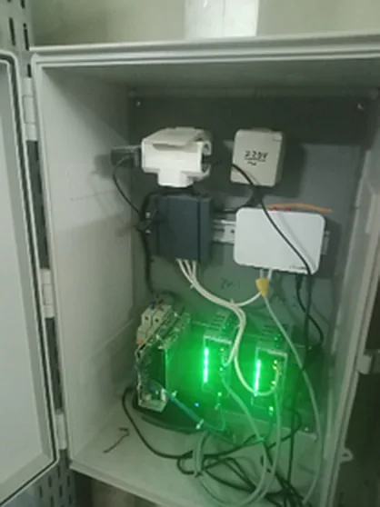
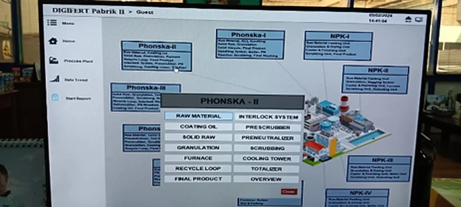
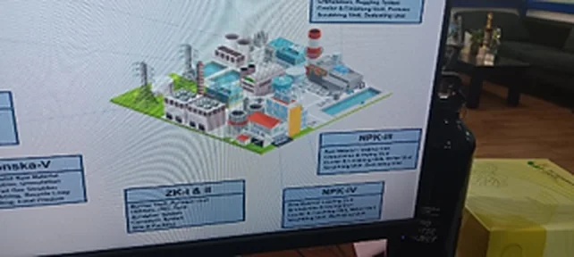
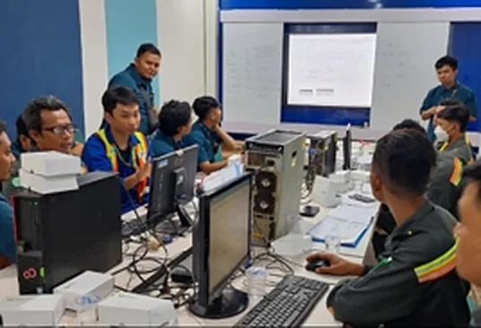
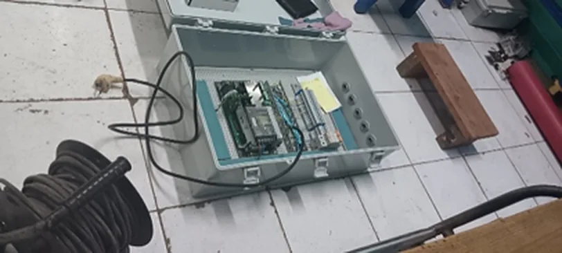
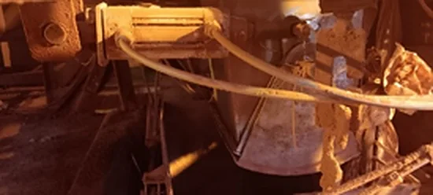

Administration Intern
PT Aldzama, Gresik, East Java
Developed and standardized refinery operational SOPs for PT Freeport Indonesia.
Industrial Automation II Practicum: Omron PLC Pick-and-Place
Politeknik Manufaktur Bandung, Automation Laboratory
- Sequenced a three-axis plant (X, Y, Z) with a pneumatic vacuum gripper using an Omron PLC in CX-Programmer, following a 28-step diagram with three pick-and-place transfers.
- Structured the ladder program into Input, Emergency, Auto, Manual, Lamp, Vacuum, Output and End sections, with step bits and interlocks so only one step is active and each movement waits for its sensor.
- Implemented Auto, Manual and Emergency operation with indicator lamps.


MIT App Inventor and IoT Practicum
Politeknik Manufaktur Bandung, IoT Laboratory
- Completed twelve MIT App Inventor exercises, from arithmetic and logic (BMI calculator, counter) to phone sensors, multiple screens and a WebViewer.
- Final test paired an ESP8266 reading a BME280 sensor with a Firebase database, read back in a multi-screen app.


LabVIEW Programming and Arduino Interfacing Practicum
Politeknik Manufaktur Bandung, Instrumentation Laboratory
- Completed a four-day LabVIEW practicum (February 2023): VIs with front panel and block diagram covering loops, shift registers, case structures, subVIs, arrays, clusters and a temperature-limit alarm.
- Used LabVIEW as the operator screen for an Arduino Uno in the second module (April 2023), through Digilent LINX and NI VISA serial: LED, pushbutton, LM35, LDR, and DC motor direction and PWM speed.


Electro-Pneumatic Control Practicum
Politeknik Manufaktur Bandung, Automation Laboratory
- Wired Festo trainer boards so solenoid-operated valves drive double- and single-acting cylinders from a relay control panel.
- Built relay logic with self-holding and interlock circuits, and sequential cylinder motion triggered by position sensors.
- Read pneumatic and electrical circuit diagrams, then assembled and troubleshot the tubing and wiring of the complete circuit.
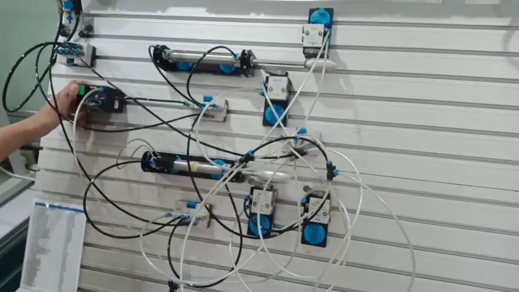
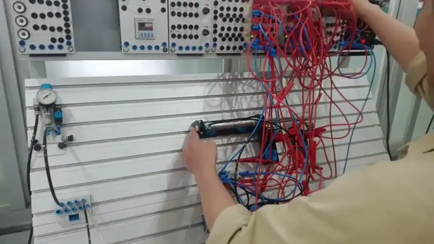
Control Panel Wiring, Interfacing and Instrumentation Practicum
Politeknik Manufaktur Bandung, Electrical and Instrumentation Laboratories
- Wired panel boards from schematic to working circuit with contactors, switches, relays and indicator lamps, then verified them with measuring instruments before applying power.
- Connected a computer to LCD, stepper motor and LED loads through serial and parallel ports in the interfacing lab.
- Practised measurement with analog test equipment such as a Sanwa multimeter and a Tektronix 475A oscilloscope.


Power Electronics Simulation Practicum
Politeknik Manufaktur Bandung, Power Electronics Laboratory
- Simulated single-phase and three-phase controlled rectifiers (half, semi, full and dual converters) in PSIM.
- Studied speed and torque of a separately excited DC motor at different firing angles, and a three-phase PWM inverter with MOSFET or IGBT switches.
- Practised induction motor drives and their speed control.
Organizational Experience

Deputy Head, Administrative & Secretarial Bureau (HIMAMO)
Politeknik Manufaktur Bandung · 2021 to 2025

Group Leader, Community Service Program (KKN)
Politeknik Manufaktur Bandung · Oct to Nov 2024

President, Student Choir
Politeknik Manufaktur Bandung · Apr to Dec 2023